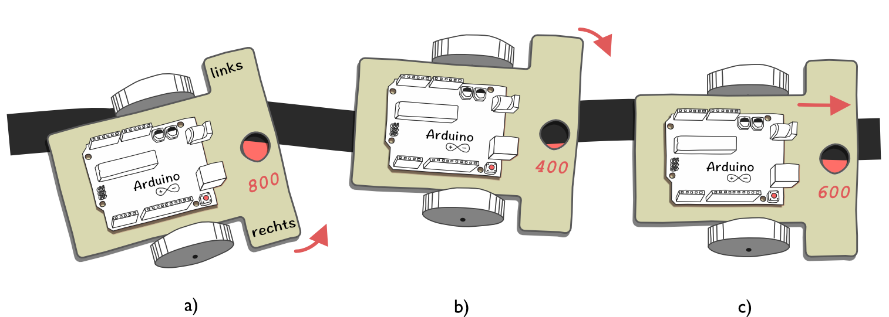

3-Stufen-Regler für einen Kantenfolger
Der einfachste Linienfolger ist, wenn man es genau nimmt, gar kein Linienfolger, sondern ein Kantenfolger. Besitzt der Roboter einen Bodensensor zum Unterscheiden von hellen und dunklen Untergründen, so kann damit bei einem genügend breitem Strich die Strichkante detektiert werden, und dieser gefolgt werden.

Das Grundprinzip des Kantenfolgers (Linienfolger mit nur einem Sensor) ist in der Abbildung dargestellt. Der IR-Sensor detektiert des vom Untergrund reflektierte Licht. In der Abbildung sind beispielhaft Zahlenwerte in rot angegeben. Bei einem weißen Untergrund wird viel und bei einem dunklen Untergrund wird wenig Licht detektiert.
3-Stufen-Algorithmus
Für eine einfache Motorregelung zum Folgen der Linie, können drei verschieden Fälle unterschieden werden, welche mit einem Algorithmus überprüft werden müssen:
- Fall A Der Sensor ist im Wesentlichen neben der Linie und detektiert viel IR-Licht. Der Roboter sollte mehr nach links zur Linie fahren.
- Fall B Der Sensor ist hauptsächlich über der Linie und detektiert wenig IR-Licht. Der Roboter sollte mehr nach rechts zur Linienkante fahren.
- Fall C Der Sensor befindet sich genau zur Hälfte über der Linie und ist somit genau über der Kante. Der Roboter kann einfache geradeaus fahren.
Ein Algorithmus zur Steuerung des Roboters (ohne Fall C) könnte folgendermaßen aussehen:
// PSEUDO-CODE
// Einfacher Algorithmus zum Kantenfolgen mit nur einem IR-Sensor
wertKante = 600 // muss angepasst werde
wiederhole
sensorWert = leseIRLicht()
if ( sensorWert > wertKante )
fahreLinks() // Fall A
else if ( sensorWert < wertKante )
fahreRechts() // Fall B
Kalibrierung
Bleibt die Frage, wie der Sensorwerte für die Linienkante ermittelt wird, der Roboter also kalibriert werden kann. Der einfachste, wenn auch nicht genaueste Weg ist, z.B. mit Hilfe der seriellen Schnittstelle die Maximalwert und den Minimalwert des reflektieren IR Lichts für die Linie und die Fläche daneben zu bestimmen. Der Mittelwert aus beiden Werten sollte der Linienkante entsprechen und kann dann als Konstante in das Programm eingefügt werden.
Der Kanten-Algorithmus funktioniert am besten, wenn der Roboter langsam fährt!
Aufgaben (Kantenfolger)
Programmieren Sie den einfachen Kanten-Algorithmus. Passen Sie die Wert der Linienkannte an und schreiben Sie geeignete Methoden
fahreLinks()undfahreRechts().[Kantenfolger2Stufen.ino]Schreiben Sie eine Kalibrierungsfunktion, welche (auf Knopfdruck) den Sensorwert für die Linienkante automatisch ermittelt. Lassen Sie hierfür den Roboter in beide Richtung automatisch über die Linie drehen und den Maximal- und Minimalwert des reflektierten Lichtes bestimmen. Aus beiden Werten den Sollwert der Linienkante.
[KantenfolgerKalibrierung.ino]Erweitern Sie den Algorithmus um den Fall C:
fahreGeradeaus().Hinweis: Legen Sie einen geeigneten Wertebereich um den Sensorwert der Linienkante fest, bei dem der Roboter geradeaus fahren soll. Nutzen Sie hierfür die Variable
wertToleranz.[Kantenfolger3Stufen.ino]Schreiben Sie ein neues Programm, welches den Kanten-Algorithmus um zwei weitere Stufen (halb links, halb rechts) erweitert. Geben Sie jedoch keine festen Sensorwerte für die verschiedenen Unterscheidungsfälle vor, sondern verwenden sie zwei verschiedene Toleranzbereiche und lassen sie die notwendigen Bereiche berechnen. Verwenden Sie außerdem die automatische Kalibrierungsfunktion aus Aufgabe 2.
[Kantenfolger5Stufen.ino]